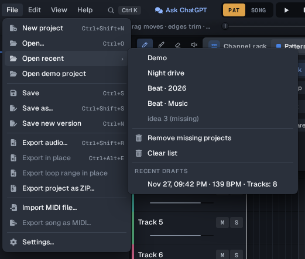

Save and reopen a song
A song is saved as one .synkopa project file. It holds your patterns, the Playlist, the Mixer and every setting. Audio files are not inside it: the project points to them where they are on disk.
- Press Ctrl + S (or choose File → Save).
- Choose a folder for the song, type a name and confirm.The status line under the menus says Saved with the file's path.
On save, audio you recorded moves from a temporary folder into a folder next to the project named after it: Song.synkopa keeps its takes in Song Audio. Samples you imported stay where they were.
To open a song again, choose File → Open… (Ctrl + O) or pick it from File → Open recent. A project marked (missing) in that list was moved or deleted; find it with Open…. Projects saved by older versions as .wave files still open.
If the open song has unsaved changes, Synkopa asks before it opens another one.
Try an idea without losing the old one
Before a big change, such as a new arrangement or a different drum sound, keep the current version as it is.
- Press Ctrl + N (File → Save new version).Synkopa saves a copy next to the current file with the next number (
BeatbecomesBeat_2) and you continue working in the copy. The earlier file stays as it was.
To pick a name or folder yourself, use File → Save as… (Ctrl + Shift + S). A new, empty project is Ctrl + Shift + N.
Get your work back
Choose the recovery option that fits what happened:
- Undo
- Ctrl + Z takes back any edit, one step at a time. Edit → Undo names the step.
- Autosave
- Every 2 minutes Synkopa keeps a recovery copy of your unsaved changes. It never writes over your project file: that changes only when you save.
- Backup file
- Each save keeps the previous save next to the project as
Song (backup).synkopa.
After closing an unnamed project
File → Open recent → Recent drafts keeps the last three edited projects you left without naming, even if you closed one before the first autosave. Choose a sketch by its date, tempo and track count, then press Ctrl + S to give it a permanent name. Leaving a reopened sketch updates the same entry. An untouched new project takes no slot.

After a crash
- Start Synkopa again.It asks Recover unsaved project? and says when the copy was made.
- Click Recover.The song opens with your autosaved changes, still unsaved.
- Play it to check it, then press Ctrl + S to keep it. To keep the old file untouched, use Save as… instead.
Not now keeps the copy and asks again at the next start. Delete copy throws it away.

- Recover opens the copy so you can listen to it and save it.
After saving something you did not want
- Choose File → Open… and open
Song (backup).synkopanext to your project.You get the song as it was one save earlier. - Choose File → Save as… and give it a new name before you continue.
Change how often autosave runs
Open File → Settings… → General and pick an Autosave interval under Project, or Off.

- The Autosave interval, under Project.
Fix missing audio
If you move, rename or delete an audio file a project uses, its clips play silence and show FILE MISSING. Synkopa opens the Missing audio window when you open such a project, and the toolbar shows a missing count until you fix it. Point Synkopa at the files and the song plays again.
- If the window is closed, click the missing count in the toolbar.The Missing audio window lists each missing file and how many clips use it.
- If you moved a whole folder, click Search folder… and choose the folder the files are in now.Synkopa looks through it and its subfolders and relinks each file it finds once, with the right length.
- If a file matched more than once, choose the right one and click Use.
- For a file you renamed, click Locate… next to it and pick the file yourself.
- Play the song, then save.
A missing library sample needs its kit installed in the Browser's Library instead. If a relinked file has a different length, Synkopa warns you: check the ends of its clips. Relinked the wrong file? Ctrl + Z undoes it. You can also relink one clip: open its menu and choose Relink missing file….

- Search folder: finds every missing file in a folder and its subfolders.
- Locate: pick one renamed or moved file yourself.
Move a project to another computer
Because audio files live outside the project file, copying only the .synkopa file leaves its audio behind. Export a ZIP that collects everything.
- Fix any missing audio first.
- Choose File → Export project as ZIP… and pick where to save it.The status line says ZIP exported. The ZIP holds the project and an
Audiofolder with every sample and take. - On the other computer, unzip the whole file.
- Open the
.synkopafile. Keep theAudiofolder next to it.The song plays with all its audio.
Third-party plugins are not in the ZIP: install them on the other computer too. Samples loaded inside a third-party plugin are not collected either. A plugin that is missing keeps its slot and settings, so the project opens and saves unchanged and plays again once the plugin is installed.
Sending the song to someone with different plugins? Add a rendered mix so they can hear how it should sound.